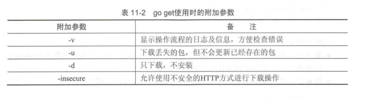
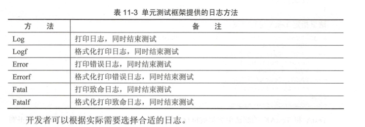

Contents
1.8. 编译与工具¶
1.8.2. 配置GOPATH¶
GOPATH是真正存放diamante的路径，Go寻找依赖包时会根据$GOPATH来寻找，GOPATH目录约定有如下3个子目录。
- src存放源代码。
- pkg存放编译后生成的文件。
- bin存放编译后的可执行文件。
1.编译(go build)¶
Go语言的编译速度非常快。Go1.9版本后默认利用Go语言的并发特性进行函数粒度的并发编译。
Go语言的程序编写基本以源码方式，无论是直接的代码还是第三方代码， 并且以GOPATH作为母子目录和一套完整的工程目录规则。
因此Go语言中日常编译时无需像C++一样配置各种包含路径、链接库地址等。
1.1 go build无参数编译¶
将源码编译成可执行文件，go build有很多种编译方法，如： 无参数编译、文件列表编译、指定包编译，使用这些方法都可以输出可执行文件。
$ tree
.
└── gobuild
├── lib.go
└── main.go
lib.go代码如下
package main
import "fmt"
func pkgFunc() {
fmt.Println("call pkgFunc")
}
main.go代码如下
package main
import "fmt"
func main() {
// 同包的函数
pkgFunc()
fmt.Println("hello world")
}
D:\go_studay\go_path\src\awesomeProject20>cd gobuild
D:\go_studay\go_path\src\awesomeProject20\gobuild>go build
$ ls
gobuild.exe lib.go main.go
D:\go_studay\go_path\src\awesomeProject20\gobuild>./gobuild.exe
call pkgFunc
hello world
1.2 go build+文件列表¶
编译同目录的多个源码文件时，可以在go build的后面提供多个文件名，go build会编译这些源码。 输出可执行文件， go build + 文件列表的格式如下：
$ ls
gobuild.exe lib.go main.go
18793@DESKTOP-PMJTNGI /cygdrive/d/go_studay/go_path/src/awesomeProject20/gobuild
$ go build main.go lib.go
18793@DESKTOP-PMJTNGI /cygdrive/d/go_studay/go_path/src/awesomeProject20/gobuild
$ ls
gobuild.exe lib.go main.exe main.go
$ ./main.exe
call pkgFunc
hello world
如果需要指定输出可执行文件名，可以使用-o参数。
$ go build -o myexe main.go lib.go
18793@DESKTOP-PMJTNGI /cygdrive/d/go_studay/go_path/src/awesomeProject20/gobuild
$ ./myexe
call pkgFunc
hello world
myexe为输出文件名
1.3 go build+包¶
“go build+包”在设置GOPATH后，可以直接根据包名进行编译，即使包内文件被增删也不影响编译指令。
$ tree gobuild02/
gobuild02/
├── main.go
└── mypkg
└── mypkg.go
main.go代码如下
package main
import (
"awesomeProject20/gobuild02/mypkg"
"fmt"
)
func main() {
mypkg.CustomPkgFunc()
fmt.Println("hello world")
}
mypkg.go代码如下
package mypkg
import "fmt"
func CustomPkgFunc() {
fmt.Println("call CustomPkgFunc")
}
设置的GOPATH 路径为D:\go_studay\go_path\
按包编译命令
D:\go_studay\go_path\src\awesomeProject20>go build -o main awesomeProject20/gobuild02
-o 执行指定输出文件为main，后面接要编译的包名，包名是相对于GOPATH下的src目录开始的。
18793@DESKTOP-PMJTNGI /cygdrive/d/go_studay/go_path/src/awesomeProject20
$ ll
总用量 2060
drwxrwx---+ 1 18793 18793 0 1月 15 11:14 gobuild
drwxrwx---+ 1 18793 18793 0 1月 15 11:18 gobuild02
-rwxrwx---+ 1 18793 18793 2107392 1月 15 11:21 main
18793@DESKTOP-PMJTNGI /cygdrive/d/go_studay/go_path/src/awesomeProject20
$ ./main
call CustomPkgFunc
hello world
1.4 go build编译时的附加参数¶

2.编译后运行(go run)¶
Python和Lua语言可以在不输出二进制的情况下，将代码使用虚拟机直接执行， Go语言虽然不使用虚拟机，但可使用go run指令达到同样的效果。
go run命令会编译源码，兵器直接执行源码的main()函数，不会在当前目录下留下可执行文件。
$ tree gorun/
gorun/
└── main.go
我们准备一个main.go文件
package main
import (
"fmt"
"os"
)
func main() {
fmt.Println("args:",os.Args)
}
$ cd gorun/
$ go run main.go --file xxx.go
args: [D:\Cygwin\tmp\go-build804207966\b001\exe\main.exe --file xxx.go]
go run不会在运行目录下生成任何文件，可执行文件被放在临时文件中被执行，工作目录被设置为当前目录，
在go run的后部可以添加参数，这部分参数会作为代码可以接受的命令行输入提供给程序。
go run不能使用“go run +
包”的方式进行编译，如果要快速运行编译包，需要使用如下步骤： （1）使用go
build生成可执行文件
（2）运行可执行文件
3.编译并安装(go install)¶
go install的功能和go build类似，附加参数绝大多数都可以与go build通用。
go install只是将编译的中间文件放在GOPATH的pkg目录下，以及固定的地将编译结果放在GOPATH的bin目录下。
$ go install awesomeProject20/gobuild
· go install是建立在GOPATH上的，无法在独立的目录里使用go install
· GOPATH下的bin目录放置的是使用go install生成的可执行文件，可执行文件的名称来自于编译时的包
· go install输出目录始终为GOPATH下的bin目录，无法使用-o附加参数进行自定义
· GOPATH下的pkg目录放置的是编译期间的中间文件。
4.一键获取代码、编译并安装(go get)¶
go get可以借助代码管理工具通远程拉取或更新代码包及其依赖包，并自动完成编译和安装。 整个过程就像安装一个App一样简单。
使用go get前，需要安装与远程包匹配的代码管理工具，如Git、SVN、HG等，参数中需要提供一个包名。
远程包的路径格式¶

go get + 远程包¶
默认情况下，go get可以直接使用。例如，想获取go的源码并编译，使用下面命令行即可：
go get github.com/davyxu/cellnet
获取前，请确保GOPATH已经设置，Go 1.8版本之后，GOPATH默认在用户目录的go文件下。
cellnet只是一个网络库，并没有可执行文件， 因此在go
get操作成功后GOPATH下的bin目录下不会有任何编译好的二进制文件。
go get giyhub.com/davyxu/tabtoy
go get 使用时的附加参数¶

5.测试(go test)¶
5.1 单元测试-测试和验证代码的框架¶
要开始一个单元测试，需要准备一个go源码文件，在命名文件时需要让文件必须以_test结尾。
单元测试源码文件可以由多个测试用例组成，每个测试用例函数需要以Test为前缀，例如：
func TestXXX(t *testing.T)
· 测试用例文件不会参与正常源码编译，不会被包含到可执行文件中。
· 测试用例文件使用go test指令来执行，没有也不需要main()作为函数入口，所有在以_test结尾的源码内 以Test开头的函数会自动被执行。
· 测试用例可以不传入*testing.T参数。
helloworld_test.go
package goTest
import "testing"
func TestHelloWorld(t *testing.T) {
t.Log("hello world")
}
执行如下：
GOROOT=C:\Go #gosetup
GOPATH=D:\go_studay\go_path #gosetup
C:\Go\bin\go.exe test -c -o C:\Users\18793\AppData\Local\Temp\___TestHelloWorld_in_awesomeProject20_goTest.exe awesomeProject20/goTest #gosetup
C:\Go\bin\go.exe tool test2json -t C:\Users\18793\AppData\Local\Temp\___TestHelloWorld_in_awesomeProject20_goTest.exe -test.v -test.run ^TestHelloWorld$ #gosetup
=== RUN TestHelloWorld
--- PASS: TestHelloWorld (0.00s)
helloworld_test.go:6: hello world
PASS
5.2 运行指定单元测试用例¶
go test指定文件时默认执行文件内的所有测试用例，可以使用-run参数选择需要的测试用例单独执行。 参考如下代码：
select_test.go
package goTest
import "testing"
func TestA(t *testing.T) {
t.Log("A")
}
func TestAK(t *testing.T) {
t.Log("AK")
}
func TestB(t *testing.T) {
t.Log("B")
}
func TestC(t *testing.T) {
t.Log("C")
}
go test -run TestA select_test.go
ok command-line-arguments 0.257s
go test -run TestB helloworld_test.go
ok command-line-arguments 0.250s [no tests to run]
5.3 标记单元测试结果¶
当需要终止当前测试用例时，可以使用FailNow，参考下面代码：
package goTest
import "testing"
func TestFailNow(t *testing.T) {
t.FailNow()
}
package goTest
import (
"fmt"
"testing"
)
func TestFailNow(t *testing.T) {
fmt.Println("before fail")
t.Fail()
fmt.Println("after fail")
}
测试结果如下：
GOROOT=C:\Go #gosetup
GOPATH=D:\go_studay\go_path #gosetup
C:\Go\bin\go.exe test -c -o C:\Users\18793\AppData\Local\Temp\___TestFailNow_in_awesomeProject20_goTest.exe awesomeProject20/goTest #gosetup
C:\Go\bin\go.exe tool test2json -t C:\Users\18793\AppData\Local\Temp\___TestFailNow_in_awesomeProject20_goTest.exe -test.v -test.run ^TestFailNow$ #gosetup
=== RUN TestFailNow
before fail
after fail
--- FAIL: TestFailNow (0.00s)
FAIL
5.4 单元测试日志¶
每个测试用例可能并发执行，使用yesying.T提供的日志输出可以保证日志跟随这个测试上下文一起打印输出。
testing.T提供了几种日志输出方法。 